Account TaxCloud
Description
This module connects Odoo with TaxCloud, enabling the automatic computation of sales
tax on invoices within the Odoo platform. It is compatible with
multi-company environments.
This module is replacing the module that was previously supported by Odoo. See
this
link for an explanation.
Odoo released the code to TaxCloud, and Sodexis is maintaining it. Bug fixing and
new features will only be added to this module going forward. If users are already using the Odoo
module and want to benefit from those bug fixes and new features, they can transition to this module; see
the instructions below. They must make sure to test this transition before doing it
in production.
If they are not currently using the Odoo connector, they can install this module
as any other module.
For previous versions of Odoo (<V17), they should migrate to V17 before
transitioning to this new module. If they need any help with the migration, they can contact Sodexis at
info@sodexis.com, and a full team of business analysts and developers will be available to help them.
If they have any questions about sales taxes, they can feel free to reach out to the
TaxCloud team here. If they're interested in learning how TaxCloud can automate their Odoo sales tax
collection, they can find more information at https://taxcloud.com/integrations/odoo/.
About TaxCloud
TaxCloud (https://taxcloud.com/) is a sales tax compliance solution with over 15 years of experience in tax technology.
Trusted by more than 4,000 companies, TaxCloud streamlines the management of sales taxes from collection and
calculation to filing. It supports e-commerce businesses in navigating complex U.S. tax regulations across
all 50 states and over 13,000 jurisdictions. With TaxCloud, businesses can accurately calculate taxes,
reduce the hassle of keeping up with changing tax laws, and ensure effortless compliance. Say goodbye to the
stress and frustration of sales tax with TaxCloud.
Module Installation
- Users must download all the official TaxCloud modules listed
below from the Odoo Apps Store before proceeding with the installation process, even if
they don’t use the related Odoo TaxCloud modules. This ensures they get all the TaxCloud features
and proper data transmission. If they use “Deploy on Odoo.sh”
in the Apps Store, they must deploy all the modules listed below.
- For example, suppose users have not installed the
Subscription app but have installed the Sales app. In that case, they are still recommended to download
all the official TaxCloud modules before installing the “Account
TaxCloud” module. The “Account
TaxCloud - Sale” modules are installed based on the installed modules
list. In the future, installing the Subscription app will automatically install the needed “TaxCloud and Subscription” module. This
ensures they do not miss any of the TaxCloud features.
- Users did not use the Odoo TaxCloud Modules:
- If users are not currently using the Odoo module, they can
install this module by simply clicking the “Activate” button and following the
configuration steps below.
- Using Odoo TaxCloud Modules:
- Switching from the Odoo TaxCloud module to our connector
in odoo V17
- If users are currently using the Odoo TaxCloud module, then they
should not uninstall the current module before
installing this module; otherwise, they will lose all of their data. This module will take care of the
configuration & data transmission from the
existing module and automatic uninstallation of the Odoo TaxCloud module once installed. It is not necessary to reinstall the Odoo TaxCloud module.
- Migrating from Odoo 17 to Odoo 19 or from Earlier
Versions to Odoo 19
- Migrating from Odoo 17 to Odoo 19
- First, switch to the official connector in Odoo 17 to
prevent data loss. Then, proceed with the migration to Odoo 19 using our connector.
- Migrating from earlier versions to Odoo 19
- First, migrate to Odoo V17 using our official connector.
Then migrate to Odoo 19 to ensure all data is retained.
- Alternatively, the module can be installed directly in Odoo
19 as a fresh installation and configured from scratch.
- TaxCloud Migration _tc modules (V17 to V19):
- Please download the V19 version of the TaxCloud apps and use
them.
- In V19, activate the inactive TaxCloud views.
- Enable Developer Mode
- In the "Technical" section (which appears only in
developer mode), find and click on "User Interface" -> "Views.
- In the search bar at the top of the "Views" list,
type "taxcloud," and in the filter, apply for the inactive.
- Activate those views.
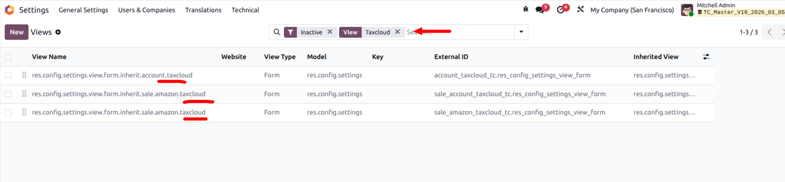
- In Accounting/Settings, set the TaxCloud API credentials
and the Default Category.
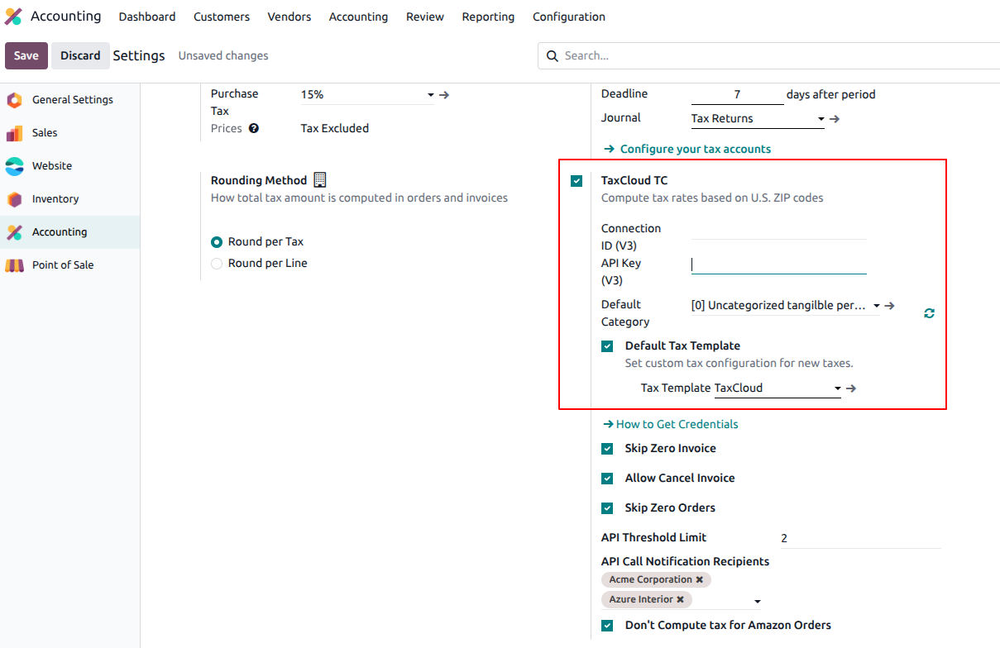
- Enable the “Use TaxCloud API” boolean in the Fiscal
position, same as in V18.
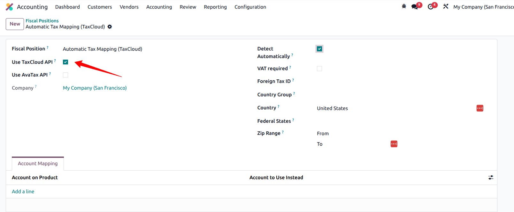
For any technical queries or support, contact us at 📧taxcloud@sodexis.com or visit the website at 🌐sodexis.com/taxcloud. Free support for the installation to the first few customers will be provided.
Configuration
Navigate to the Accounting app
and under the Configuration menu, select the
Settings option. In the Settings view, locate the TaxCloud TC boolean and enable it.
Enter the API (Application Programming Interface) credentials derived from the
TaxCloud site into the fields under the TaxCloud TC section. These steps are required to integrate Odoo with TaxCloud.
The credentials include the API Version, API Login ID, API Key, and Default
Category.
- The refresh button under the Default Category is used to
import the TIC (Taxability Information Codes) product categories from TaxCloud.
- The Default Category is applied when no TaxCloud Category is set on both the products and product
categories.
- When the boolean “Skip Zero
Invoice” is enabled, the invoice line with a “0”
price is not sent to TaxCloud. Because, even if it is sent to TaxCloud, the computing tax is going to be
zero.
- When the boolean “Allow
Cancel Invoice” is enabled, users will be able to cancel
invoices.
- When the boolean “Skip
Zero Orders” is enabled, the sale order line with “0”
price is not sent to Taxcloud. Because, even if it is sent to TaxCloud the computing tax is going to be
zero.
- A scheduled action named “TaxCloud: Daily TIC Category Sync” has been
introduced. This scheduled job updates the TIC (Taxability Information Code)
categories available in TaxCloud on a daily basis. The synchronization runs
automatically and processes the TIC codes alphabetically from A to
Z, ensuring that the categories remain up to date in Odoo.
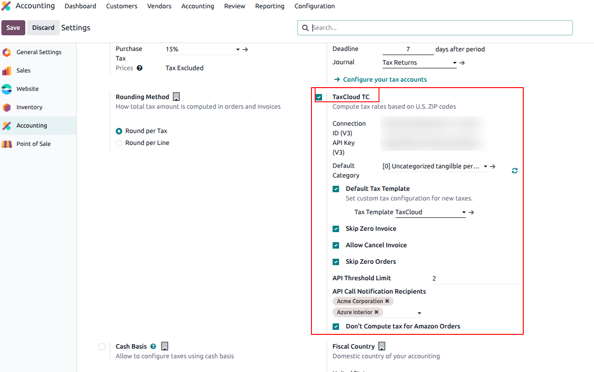
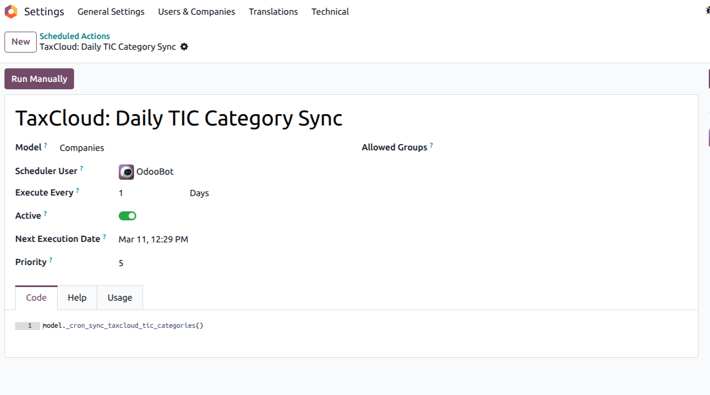
To be Notified About Updates
The button “Get Notified about
Updates” allows users to be notified about major updates and bug
fixes.
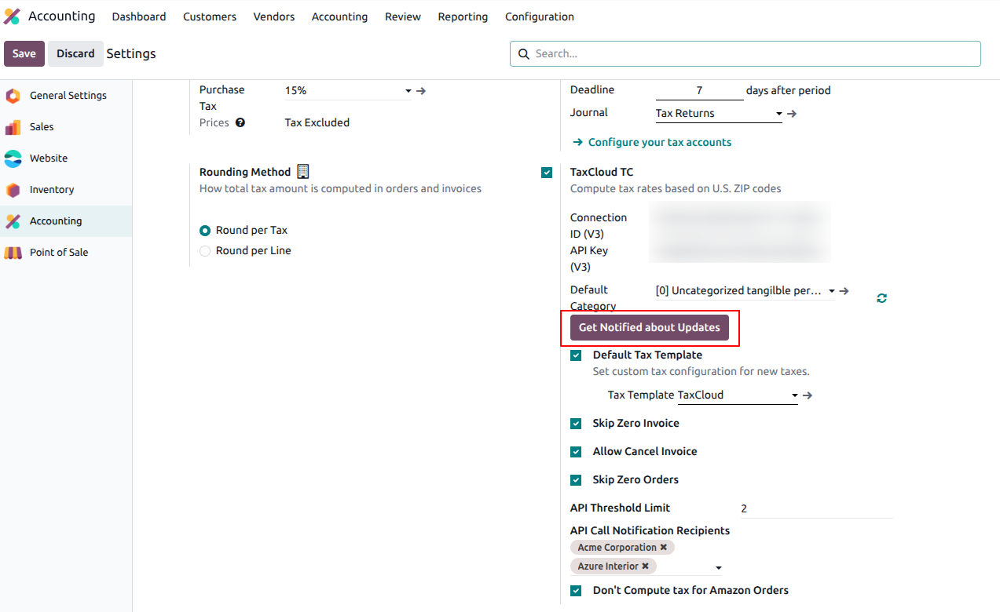
Clicking the button opens the Compose Email wizard. From the wizard, users can
compose and send a confirmation email to receive notifications from the team regarding major updates and bug
fixes.
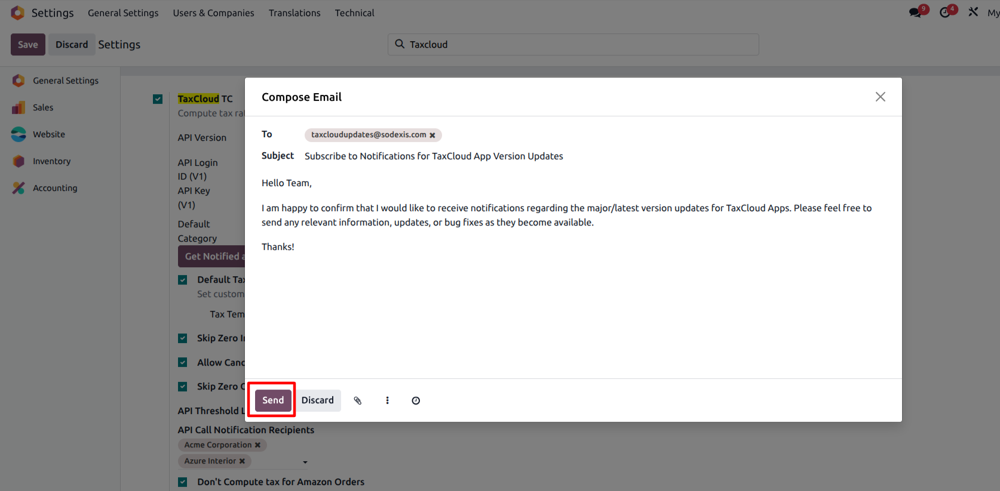
The “Default Tax Template” boolean is found under the Default Category field. When the “Default Tax Template” boolean is enabled, a new
field, “Tax Template,” appears.
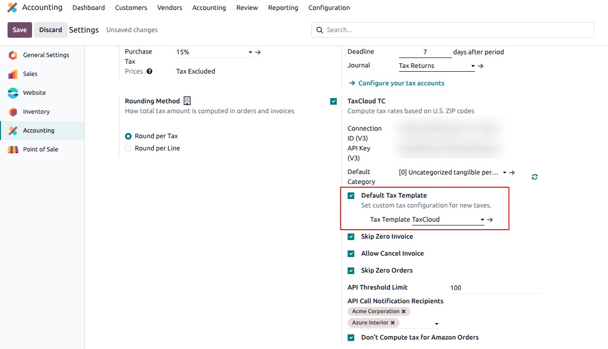
Once the Default Tax is set, any tax created through the API will use this template
to generate new taxes. However, fields such as Tax Name,
Amount, and Label on
Invoices are left to override.
API Usage Monitoring & Alerts
The “API Threshold Limit” and “API Call Notification
Recipients” fields are used to set the threshold and specify the
recipients for alerts.
When the scheduled action “TaxCloud API Call
Counter” is triggered, it reviews the records from the past 24 hours and
calculates the API call count. If the count exceeds the defined threshold, an alert will be sent to the
recipients specified in the “API Call Notification
Recipients” field.
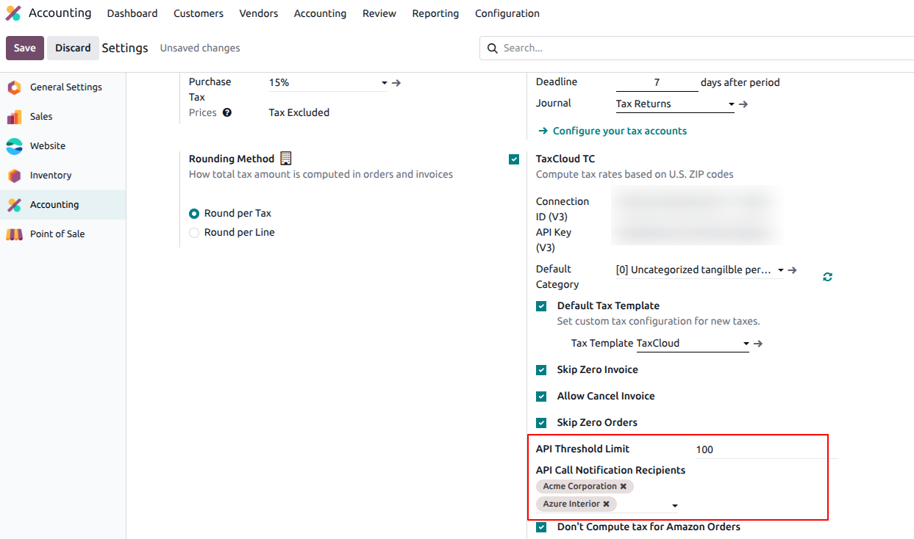
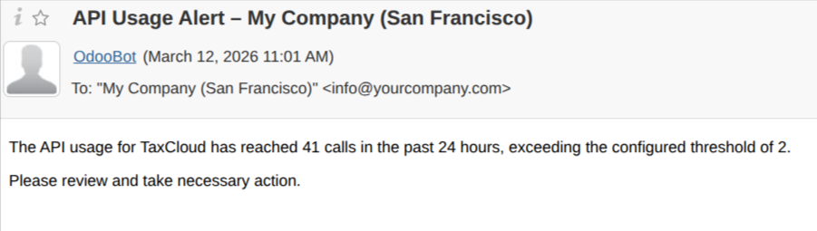
Discover more about keeping your business compliant with sales
tax regulations.
- Explore TaxCloud Taxability Information Codes (TICs) for
detailed product tax classifications: https://app.taxcloud.com/tic
- Access TaxCloud's comprehensive resources, including a
tax rate threshold map, tax rate lookup tool, and state-specific sales tax guides: State
Guides
Rounding Method
Navigate to the Accounting app
and select Settings under the Configuration menu. In the Settings view, locate the Taxes section and under the Taxes, set the Rounding Method to
Round Per Tax to round the tax values.
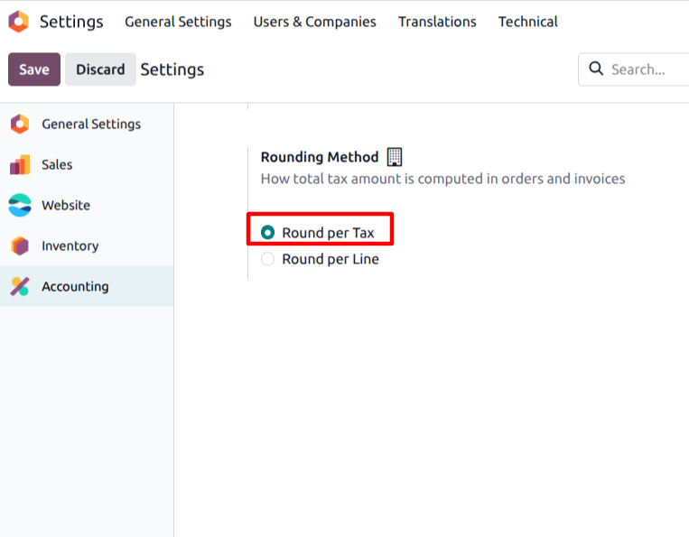
Setting TaxCloud Categories on Products
To view the list of TaxCloud Categories, ensure that the developer mode is activated. Navigate to the Accounting app and under the Configuration menu locate Accounting to select TaxCloud
Categories.
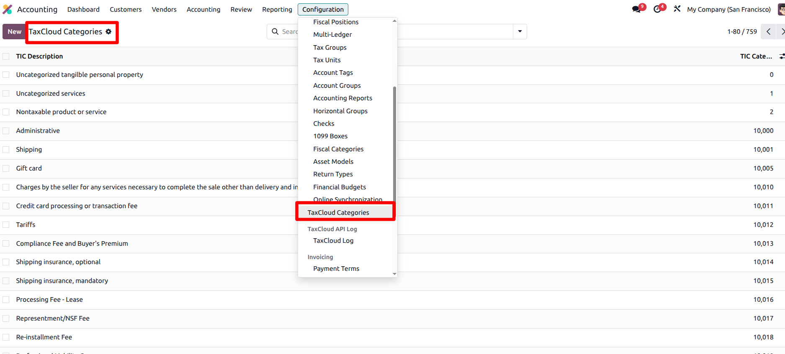
If a TaxCloud Category is set on a product and another on its Product Category,
Odoo only considers the TaxCloud Category found on the product itself.
If the TaxCloud Category is not set on a product, then Odoo considers the
TaxCloud category set on its Product Category.
If the TaxCloud Category is not set on both the product and the Product Category,
then Odoo considers the Default Category set in
the Accounting Settings.
The TaxCloud Category set on a parent product category does not apply to its child
product categories and vice versa. For example, if the TaxCloud Category is set to the “All” Product Category, then it is not applied to
the “All/Sales” Product Category,
and vice versa.
Set the TaxCloud category for the Shipping Products and Down Payment Products to
get the right tax computation.
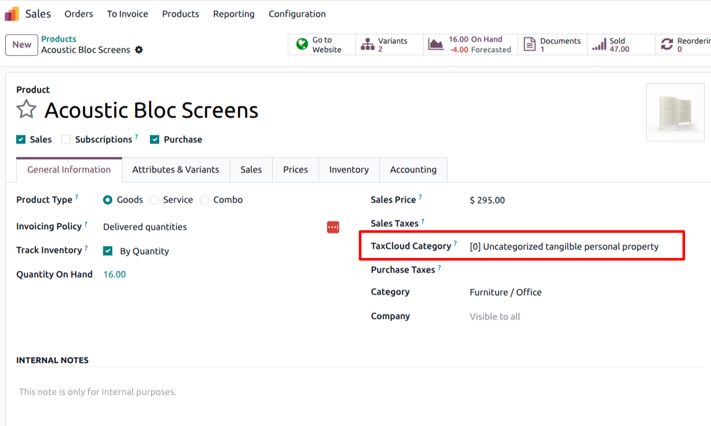
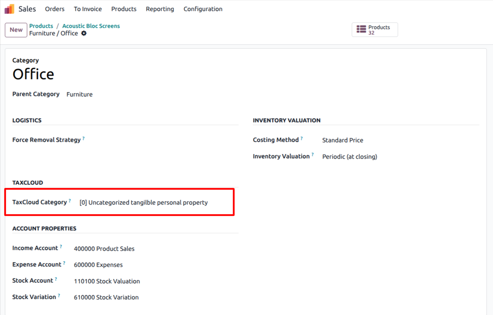
In the Accounting app,
navigate to the Configuration menu to locate the
Accounting section and select the Fiscal Positions option. Ensure the 'Use TaxCloud API' boolean is enabled.
To automatically set the Fiscal Position, enable the 'Detect Automatically' boolean in the Fiscal Position.
When 'Detect Automatically' is enabled, the options such as VAT
required, Country Group, Federal States, and Zip Range can be configured
based on the requirements.
Here, set the “Country” field as "United States". If the delivery address in the sales
order/invoice is the United States, then the Fiscal Position (Automatic Tax Mapping (TaxCloud)) will be
applied automatically.
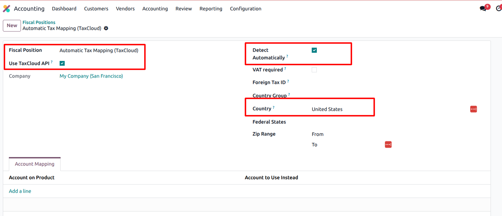
Functionality
Navigate to the Accounting app
and select Invoices nested under the Customers menu. Create a new Invoice.
Under the Other Info tab, set
“Automatic Tax Mapping (TaxCloud)” in the
Fiscal position field. The taxes are computed based on the
“Fiscal Position” which was configured
initially.
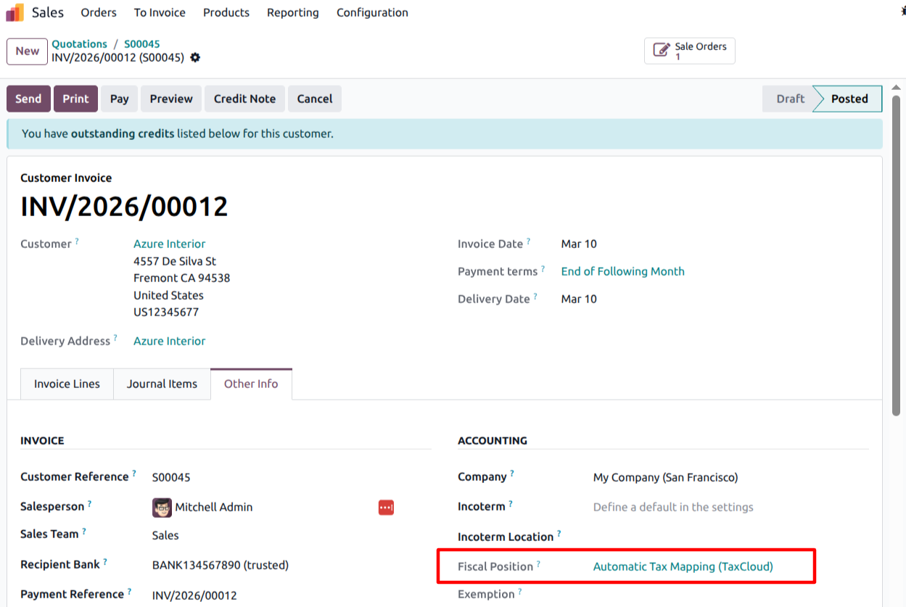
Confirm the invoice to get it posted. It can be seen that the computed tax from
TaxCloud is applied in the invoice, as shown below.
Note: The taxes cannot be computed before the invoice is
posted.
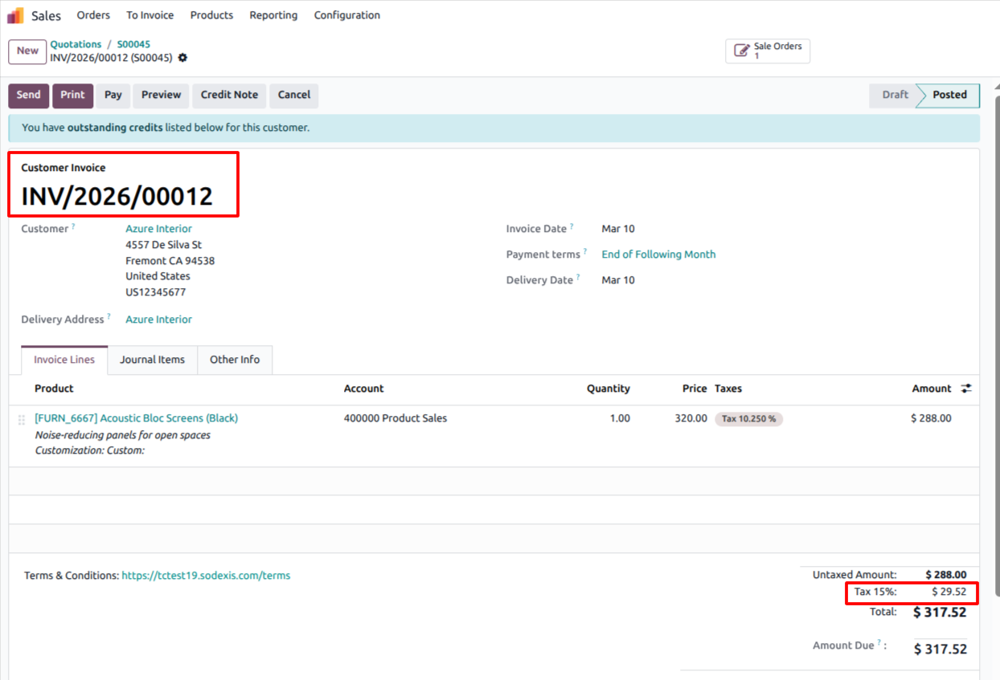
TaxCloud uses the destination from the "Delivery
Address" and the customer from the "Customer
ID" on the invoice.
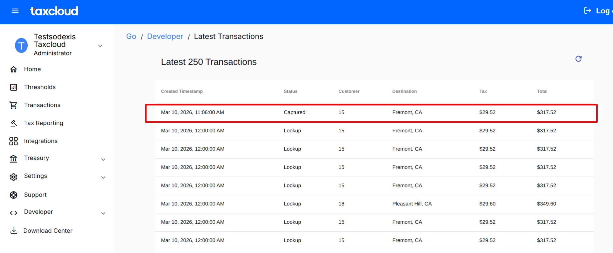
Log in to the TaxCloud website, locate the Transactions
menu, and select the Reports option, which shows the recent transactions in
Odoo.
The status of the invoice on the TaxCloud website is seen as “Captured” when the invoice is posted in
Odoo.
Canceling the Invoice
A new invoice cancellation process has been implemented based on the
boolean “Allow Cancel Invoice” in
Accounting settings.
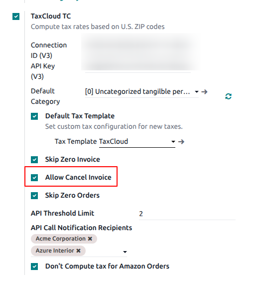
When enabled, the standard "Reset to
Draft" button will be hidden for invoices with fiscal positions linked to
TaxCloud. Instead, a new "Cancel" button is
introduced. Clicking this button triggers a cancellation request via TaxCloud's Return API.
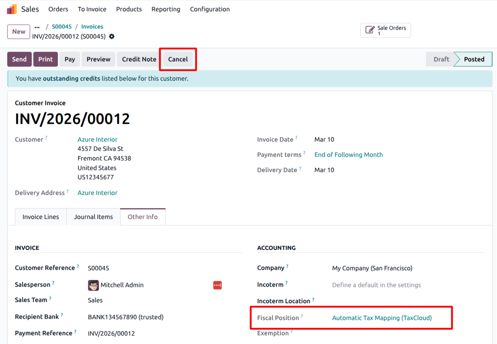
If the API call fails, a pop-up will notify the user of the failure and suggest
manually creating a credit note. If successful, the invoice will be reset to draft and the TaxCloud
transaction will be cancelled simultaneously.

When reconfirming the invoice, a new TaxCloud transaction is created with a
suffix pattern (e.g., 195-1, 195-2) appended to the original transaction ID.
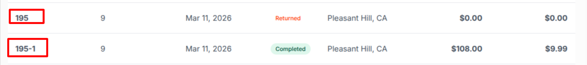
If the invoice is cancelled again, the system ensures that the transaction ID
is managed correctly by incrementing the suffix.
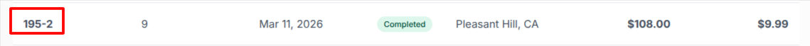
Additionally, when a credit note is created from an invoice with a transaction
ID like 195-2, the same ID will be used to create the corresponding Return on TaxCloud.
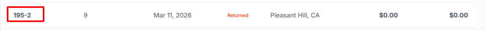
Note: This integration only supports cancellation
of invoices, not credit notes, since TaxCloud does not allow changes to a transaction once a Return has been
processed.
Also, if the tax for that period has already been filed, the process remains valid
as long as a proper return date is provided and the return is correctly submitted, ensuring accurate
reporting in TaxCloud.
Credit Note
To reverse the invoice, create a credit note using the “Credit Note” button on the invoice. When a credit note is created for the posted invoice, TaxCloud updates the tax and the
total as “0” on the original record with the
status as “Returned” as shown
below.
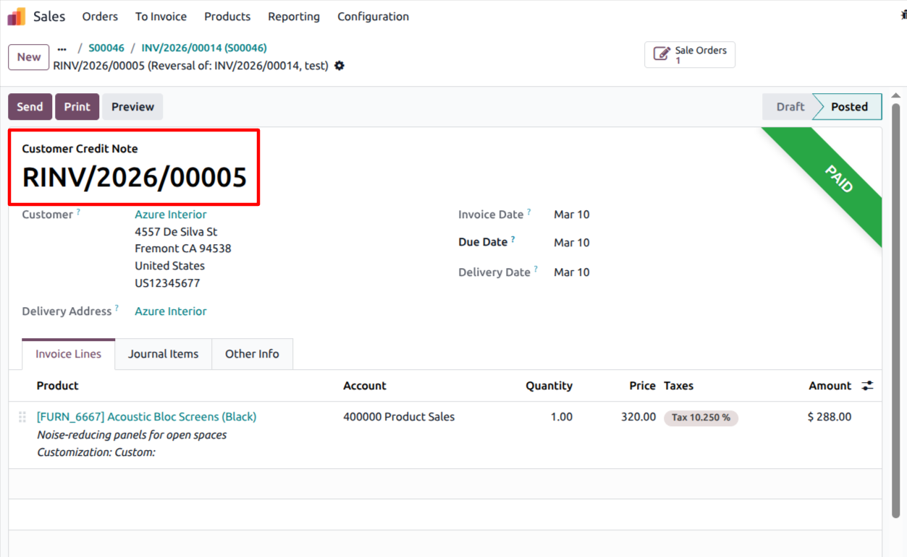
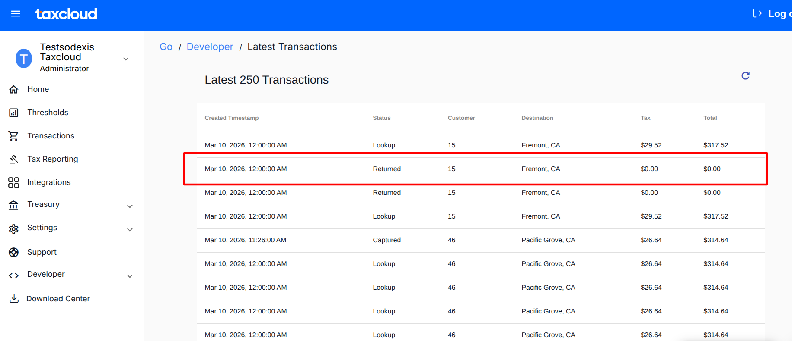
Note: This release resolves an issue where users
could incorrectly create credit notes under the TaxCloud fiscal position without referencing an existing
invoice. These credit notes were not reported to TaxCloud, leading to inaccuracies.
Going forward, credit notes with the TaxCloud fiscal position can only be
created as reversals of existing invoices, ensuring that all credit notes are accurately tracked and
reported to TaxCloud.
If a user attempts to post a credit note not linked to an original invoice, the
system will now throw an invalid operation error as shown in the screenshot below.
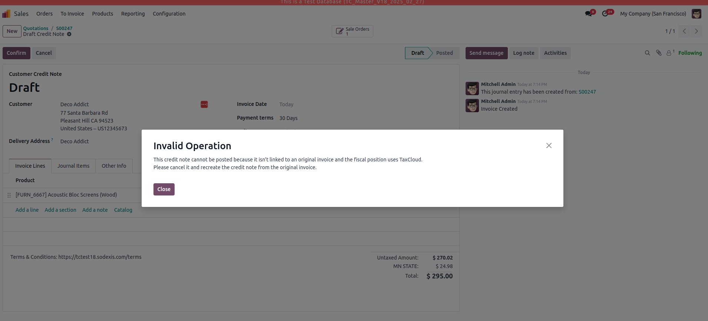
Frequently Asked Questions:
Which version is the app available for, and where can I find it?
- The app is available for versions V17, V18 and V19. You can find it
in the Odoo App Store.
Is there a specific installation procedure for integrating TaxCloud with Odoo
17 V18 and V19?
- The steps are detailed and explained in the Account TaxCloud
Documentation under the Module Installation section.
What Odoo edition is the TaxCloud module compatible with?
- Customers who are self-hosted or hosted on Odoo.sh
can install the modules.
- However, it is not
compatible with Odoo Online (SaaS) — because Odoo Online does not allow the installation
of third-party modules, including the TaxCloud connector
- Customers on Odoo Online hosting who are currently on a
“minor” version, such as v19.1, would need to downgrade to a stable version like v19.0 and
then switch to Odoo.sh hosting before they can install the Sodexis TaxCloud connector (or any other
third-party module).
What can I do if I need support and assistance with installing and using the
module?
- For help with the TaxCloud module, you can purchase an onboarding
package directly from TaxCloud, which includes support from their team. Alternatively, you can purchase
a Sodexis Success Pack through this link, which provides additional resources and personalized
assistance from our team for installation, setup, and ongoing functionality.
What is the standard timeline to go live with the TaxCloud connector after onboarding
begins?
- Once we receive all the required information, including your
TaxCloud credentials and answers to the initial onboarding questionnaire, our team typically completes
the setup and testing within 5 business days. This
includes:
- Install our TaxCloud Connectors in the Staging
- Configuration to Integrate TaxCloud with Staging
- Testing the flow and transaction in TaxCloud
- Assistance with moving the configuration to
production
- Once you approve the go-live after completing the above testing
in your staging environment, we can move to production within 3 business
days.
Does it support Multi-Website and Multi-Company?
- Yes, the module supports Multi-Website and Multi-Company
configurations. API credentials in the settings are company-specific, and each website uses the
credentials based on the company on it.
How is the tax rate percentage calculated and displayed?
- Previously, TaxCloud only provided the tax amount, and
the system recalculated the tax rate from that amount. This could lead to minor rounding
differences which caused confusion.
- With the move to TaxCloud V3 API, this issue has been
addressed. TaxCloud now provides both the tax rate and the tax amount.
- Internally, the tax rate is still recomputed from the tax
amount to maintain precision.
Can I cancel an invoice after it’s sent to TaxCloud?
- Yes, you can cancel the invoice after it’s sent to TaxCloud.
If you want to allow invoice cancellation, enable the boolean “Allow
Cancel Invoice” option in the Accounting Settings. To enable this
feature, make sure you have installed the latest version of the account_taxcloud_tc module.
- This allows canceling invoices only; credit notes are not supported
for cancellation with this option.
Why am I getting an error when posting an invoice created from a sales order
after making a return?
This error occurs because TaxCloud now blocks the creation of credit notes using the
TaxCloud fiscal position unless they are generated
directly from an existing invoice. When a return is processed, attempting to create a new standalone invoice
or credit note (instead of referencing the original invoice) triggers this restriction.
Why aren’t taxes updating in Odoo after changing the TIC in
TaxCloud?
- Taxes in Odoo are calculated at the time a sales order is
created, using the TIC (Taxability Information Code) that was active in TaxCloud at that moment.
- If the TIC is later updated in TaxCloud, the change will not
apply to existing sales orders because Odoo does not recalculate past transactions automatically.
- To correct taxes when the wrong TIC was initially set, you can
either:
- Click Update Taxes on the existing sales order to recompute
taxes using the new TIC, or
- Cancel and recreate the sales order so taxes are calculated with
the corrected TIC.
I process Standalone Credit Notes, will that work with TaxCloud?
- Standalone credit notes in Odoo are not yet integrated
with TaxCloud. If this is something you need, please contact us—we’d be happy to explore
building a custom connector tailored to your requirements.
On which address is the calculation of tax based?
- It is based on the Delivery Address with the correct Zip code,
state, and country.
How do I manage the taxability of shipping charges?
- You need to set up the TaxCloud category on the shipping
product.
Will an invoice line or sales order line with a zero amount be sent to
TaxCloud?
- Yes, it is sent to TaxCloud. If you don’t want to send
those, enable the boolean “Skip Zero Invoices” or “Skip Zero Orders” option in
the Accounting Settings.
Does TaxCloud compute tax for Amazon orders?
- Yes. However, if you don’t want to compute tax for sales
orders created from Amazon, enable the “Don’t Compute Tax for Amazon Orders” option in
Accounting Settings.
Can I use TaxCloud with my POS?
- Yes, you can use TaxCloud with Odoo POS using our dedicated
module
- This module enables TaxCloud integration directly with Odoo POS,
allowing you to calculate sales tax seamlessly during POS transactions.
How do you set up accounts for the taxes created via API?
- A default Tax can be set in the “Default Tax Template”
field on the Settings. Once configured, any tax created through the API will use
this template. However, fields such as Tax Name,
Amount, and Label on
Invoices are left to override.
Why does the “Update Taxes” button not show up in the sales
order?
- If all the apps are installed properly, check whether the
“Use TaxCloud API” boolean is enabled in the fiscal position set on the Sales Order.
How do I set the Fiscal Position automatically?
- Enable the “Detect Automatically” boolean in the
Fiscal Position.
Is there a way to avoid every quote reaching out to TaxCloud for tax
calculation?
- Yes. This can be controlled using the Fiscal Position
configuration in Odoo, specifically the “Detect Automatically” option. If the TaxCloud
fiscal position is only applied to specific states/countries, TaxCloud will only be triggered for those
customers.
How do we handle out-of-the-country customers?
- For international customers, you can either configure a separate
Non-Taxable or rely on default tax rules. Since
TaxCloud fiscal position can be limited to US states only, international customers will not trigger
TaxCloud and can remain non-taxable.
Can we configure a customer for tax exemption during the sales order creation
process in the TaxCloud Odoo?
- No, tax exemption cannot be configured directly in the sales order.
A separate Exemption menu is available in both the Sales and Accounting modules, where you can manage
customer tax exemptions.
If I set an exemption for the parent contact, will it apply to child
contacts?
- Yes, when an exemption is set for the parent contact, it
automatically applies to all its child contacts whose delivery state matches the exemption state.
- However, if an exemption is set for a child contact, it applies
only to that contact and does not extend to its parent or child contacts.
Why does the create button for Exemption not show up?
- Ensure the “Manage TaxCloud Exemption” user group
is enabled for the relevant users.
Will TaxCloud still compute tax for the Exemption applied invoice/order
line?
- Yes, for some specific TIC codes.
Is the TaxCloud system and connector capable
of handling partial sales tax calculations?
- Yes, using the exemption module, a valid exemption
certificate that includes a specific exemption reason will ensure the correct tax rate is
applied.
Why is the tax not computed for all states?
- To enable tax collection for states, please make sure those
states are enabled to collect the taxes in the TaxCloud account.
Do I need to configure the threshold manually?
- The threshold is available in the TaxCloud account; there is no
configuration for it in Odoo. The threshold will be set automatically.
Does the creation of a sales order also generate a transition in the TaxCloud account, or can we limit it to only
those related to the actual invoice?
- Yes, this transaction is necessary to maintain
consistent tax between the invoice and SO.
Why do some of the transactions in TaxCloud show no cart ID? How can we check
which order this transaction was created in?
- This was resolved. Please make sure you are using the latest
version of the app.
How does the transition status get updated?
- The status will be updated as “lookup” for the
quotation, “captured” for the invoice, and returned for a credit note. For the confirmed
invoice, the transaction is authorized and then captured, so we don’t see the transaction in the
authorized state.
What are the current limitations of the TaxCloud-Odoo
Connector?>
- Inability to cancel a Credit Note after it has been
submitted to TaxCloud.
- An "Update Tax" feature on Invoices/Credit Notes
to verify the tax amount prior to submission to TaxCloud.
- Odoo sometimes applies discounts using negative line items,
which the TaxCloud API does not support at this time.
- Supports only accrual-based tax reporting and does not
support cash basis accounting. Taxes are reported based on transaction events,
not on payment collection.
I previously used a different tax calculation software, and now I need
to process a refund/return for an order that wasn’t handled through TaxCloud. I'm getting
errors—did I do something wrong?
- No. TaxCloud now restricts the creation of credit
notes with the TaxCloud fiscal position to only those generated from existing invoices. This ensures that all records using
the TaxCloud fiscal position are properly reported to TaxCloud.
- We're also rolling out a new release that
addresses a bug that previously allowed users to create standalone credit notes with the TaxCloud fiscal
position. However, those credit notes weren’t being transmitted to TaxCloud, since TaxCloud only
accepts credit notes as reversals of existing, reported invoices.
- To get this update, please download and install
the latest version of the TaxCloud connector.
What do I do if I have more questions?
What do I do if the instructions included in these FAQs do not work?
- Check to make sure you're using the most recent version of the
TaxCloud connector. If necessary, update the module and try again.
Credits
Contributors
For additional information or inquiries regarding TaxCloud, feel free to reach
out to us at
Sodexis <📧taxcloud@sodexis.com> or visit our
website at <🌐sodexis.com/taxcloud>
This module is maintained by Sodexis.